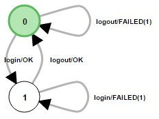

ALEX
Automata Learning EXperience (ALEX) is a web application that allows you easily infer models of web applications and JSON-based REST services using active automata learning.
How it works
Let us take a look at the example of an authentication system. For an integration test you would probably write tests using Selenium or something else that check the following behavior:
- register > login > logout should work
- logout should not work
- register > logout should not work
- ...
With increasing complexity and feature set of an application, integration tests might be hard to maintain if all possible and impossible combinations of features should be tested. With ALEX, we follow a different, more automated approach that
- does not require any knowledge about the implementation of an application,
- does not require any experience in programming and
- separates the language specific tests from the application to test.
Assume the authentication system mentioned above has the following features: register, login and logout. Then, we model each feature independent of each other using e.g. Selenium. In Active Automata Learning, this set of testable features is called alphabet where the elements of the alphabet are called symbols. A sequence of symbols is called a word.
We then pass the learning alphabet to a learner that uses specific algorithms to create a model of the underlying application and how it behaves based on the given symbols. Therefore, words are executed on the real system under learning and its reactions are observed. Finally, the learner creates a hypothesis as an output that is modeled as a Mealy machine. In this example, it would hopefully look like this:

As it can be seen, the learner has learned the application and all features work as intended. From here on, more symbols can be added and learned.
It can be that the learner has not learned the application correctly, i.e. there is a word in the model that has a different output than the actual application. In fact, one can never be a 100% sure if the model actually represents the system under learning. How to check for and handle these mistakes is described in the user manual.
If you want to know more about Active Automata Learning, you can find some resources at Google Scholar or the homepage of the LearnLib.
Installation and first login
We developed and tested ALEX using either Windows 8.1 and higher and Linux Ubuntu 14.10 and higher. As the application runs on JAVA, any other system with an installed JVM should do fine. We also advise to use a modern web browser like Google Chrome >= v46, Mozilla Firefox >= v42 or Microsoft Edge with JavaScript enabled in order to run the front-end properly.
After the first start, you can login as admin backend using the account below.
Email: admin@alex.example
Password: admin
Using the packaged version
Make sure you have Java 8 installed on your system.
- Download the latest version. Download
- Open a terminal and start the war archive using
java -jar ALEX.war [--port=XXXX] - Open http://localhost:8000 in a web browser
From source
For the Installation from the source files make sure your system matches the following system requirements:
- Java JDK 8
- Maven 3
- Node.js v6.9.* and the NPM
To install and run ALEX, execute the following commands in a directory of your choice:
git clone https://github.com/LearnLib/alex.gitcd alex/main/src/main/webappnpm installcd ../../../..mvn install [-DskipTests]cd mainmvn spring-boot:run [-Dport=XXXX]- open http://localhost:8000 in a web browser
Further reading
FAQs
Is ALEX ready for production use?
ALEX has already been used by a class at the TU Dortmund University as a tool to test a student project.
As far as we are concerned, we used the application to learn applications like Bugzilla and parts of the famous Wordpress.
Could I potentially learn any available application that is accessible over the internet?
Yes, you could, but really should not do that, since testing usually takes a lot of traffic, and your test targets may not like it.
But we do not pragmatically prohibit it either.
The primary use case is to use ALEX for testing applications that are installed locally or in the same network.
Do I really not have to have any programming experience?
Yes and no, it depends on how you define programming experience.
We made the best efforts to abstract all necessary steps to test a web application with ease.
While modelling Selenium tests, it may eventually be helpful to have basic understanding of HTML and CSS.
The same goes for modelling REST tests where it is needed that you can write JSON documents.
But to our understanding neither JSON, HTML nor CSS are programming languages.
How potent does my system have to be to run tests?
Learning is a CPU and memory intense process, but we cannot really tell you an lower bound for your system specs.
From our own observations, it is advised to have at least 2Gb of RAM and a relatively modern Dual Core CPU to run tests at a satisfiable performance.
The more power your system has, the faster your tests should execute.
But feel free to test it on your Raspberry PI.
I want to learn a specific feature of my application but ALEX does not provide a way to model it. What can I do?
Initially, we did not develop ALEX as a solution to all situations that may occur in a web application, but to the most common ones.
If you think a key feature is missing, feel free to submit an issue and we will see what we can do.